The Spatiality of STEM Learning Opportunities
2023-12-08
Agenda
- Research Overview & Frameworks
- Previous Work - Advanced STEM Success
- Current Work - Advanced STEM Access
- Current Work - Advanced STEM Teacher Learning
- Future Work
- Research Agenda
- Research Proposal
- Long-term Goals
About Me
- White, female, FLI
- Originally from Greene County, TN
- Taught secondary math, AP® Statistics, and computer science in Eastern KY for 6 years
- Facilitator of professional learning for 5+ years
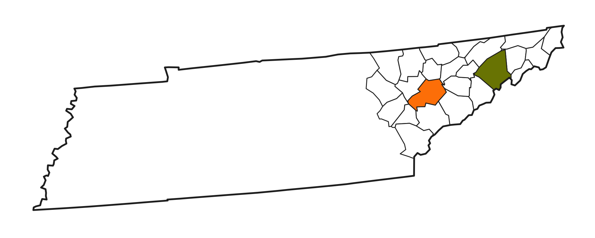
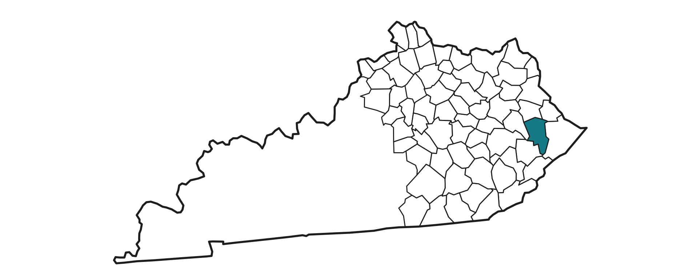
Terminology: Space/Spatial
- What is ‘space’?
- outer space, physical space, geographic space
- Spatial data
- is: data that has a spatial component
- geographic boundaries
- geographic features
- geographic coordinates
- is not: data that is spatially distributed
- Demographic data for each U.S. county
- NCES locale codes (e.g., City, Suburb, Town, Rural)
- is: data that has a spatial component
Terminology: Advanced STEM
- What is advanced STEM?
- Advanced Secondary STEM
- Science
- Technology
- Engineering
- Mathematics
- Advanced Secondary STEM
- Advanced STEM Delivery?
- Advanced Placement (AP)
- Project Lead the Way (PLTW)
- International Baccalaureate (IB)
- Dual Enrollment
Why Space?
- We explore dimensions of:
- Class, gender, race/ethnicity, dis/ability, age, sexual orientation, parental education, language, etc…
- Why space? Why now?
- Data availability
- Spatial analysis techniques

2017
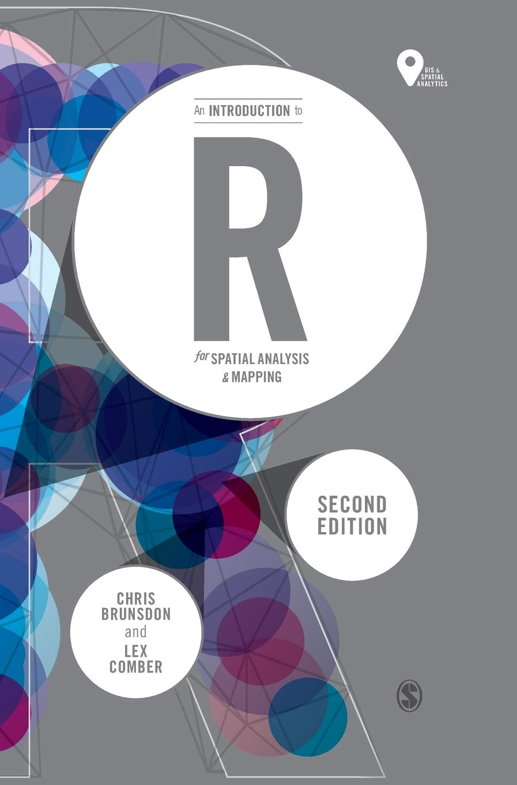
2019
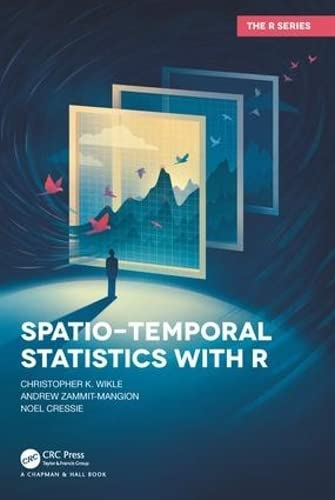
2019
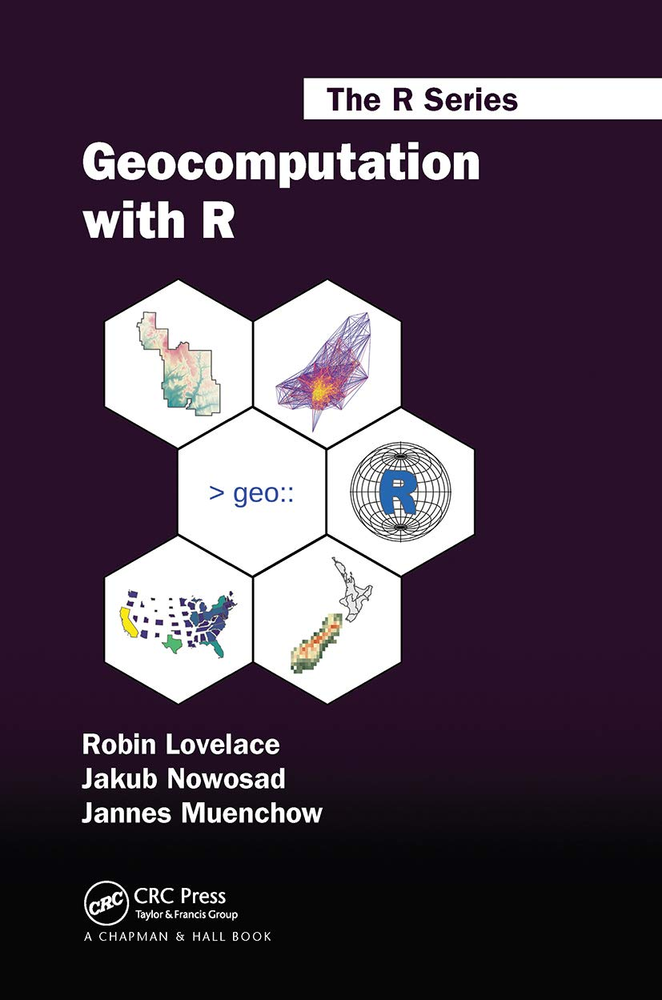
2020
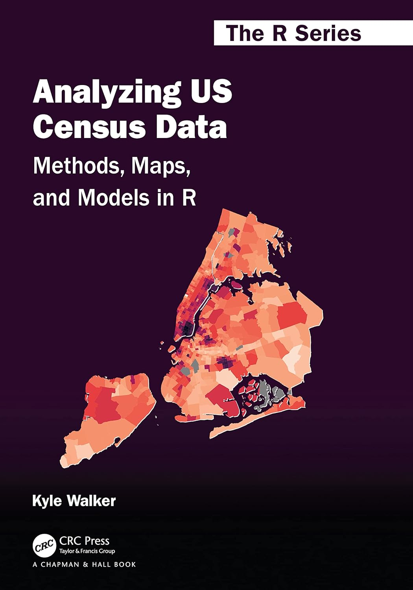
2023
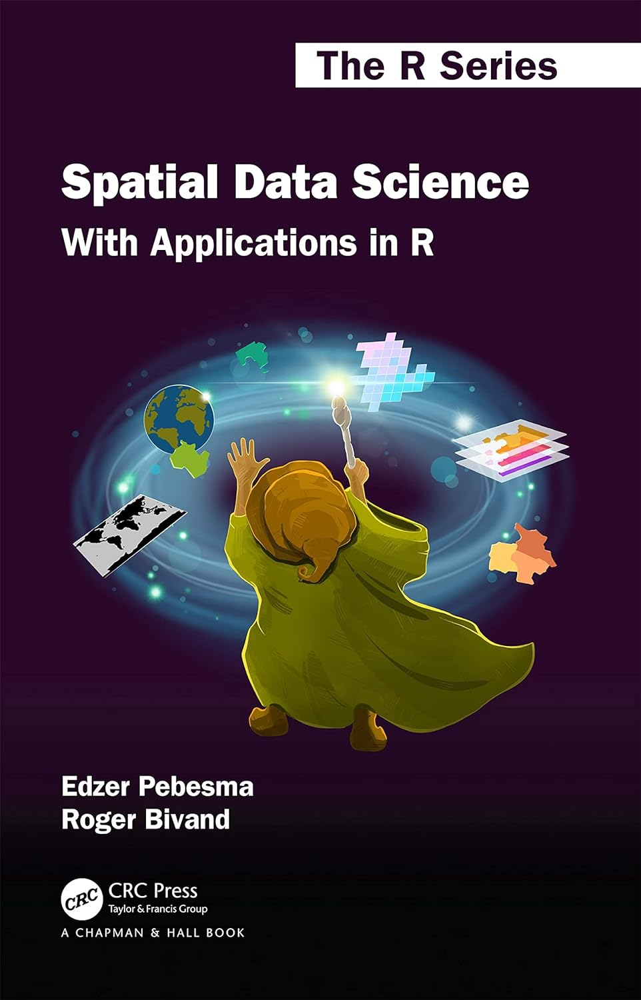
2023
identify, examine, and address spatial inequities in learning opportunities
Frameworks: Spatial Theory
1 2 3 4 6
Critical spatial theory1 calls for the interrogation of:
“the intersections of space, power, and knowledge in order to expose geographies that perpetuate or disrupt inequities in both processes and outcomes”
(Annamma et al., 2010, p. 4) 2
Frameworks: Ecosystem Health
1 2 3 4 6
Ecosystem Health1
Indicator
Keystone
Frameworks: Ecosystem Health
1 2 3 4 6
Ecosystem Health1
{kind=link}
Frameworks: Ecosystem Health
1 2 3 4 6
Indicator
Student STEM Learning
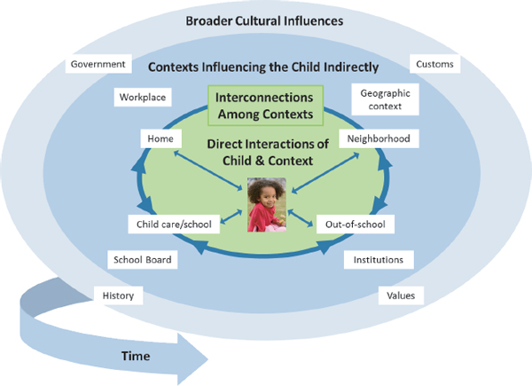
STEM Learning Ecosystem Model1
Frameworks: Ecosystem Health
1 2 3 4 5
Keystone
STEM Teacher Learning
“Creating a profession of teaching in which teachers have the opportunity for continual learning is the likeliest way to inspire greater achievement for children…”
(Darling-Hammond, 2008, p. 99)1
Frameworks: Opportunities to Learn
1 2 3 4 5
- What are the necessary conditions for learning?
- Opportunities to Learn (OTL): “Affordances for changing participation and practice” (Greeno & Gresalfi, 2008, p. 172)1
- Three conditions2:
- Availability
- Accessibility
- Learner dispositions
PREVIOUS WORK
Spatial Inequities in AP® STEM Success
[Student Learning = Indicator Study]
STEM Success: Literature
1 2 3 4 5
- Multi-year sustained decrease in pass rates among Black, Latinx, and Native American students 1
- Low socioeconomic status (SES) students have a pass rate 17% lower than more affluent peers 2
- On average, men outperform women across all AP® STEM exams 3
- In 2015 rural students had the lowest AP® STEM pass rate of all locales 4
1 2 3 4 5
STEM Success: Research Question
How is student success in advanced STEM related to community demographics and geography?
1 2 3 4 5
STEM Success: Data
1 2 3 4 5
- Population of all AP® exam results for U.S. public high school students from AY 2015-2019
- N = 16,993,460
- Success (passing the exam; 3+) demonstrates access to the course content
- Stanford Education Data Archive (SEDA) 1
- Composite SES measure by school district
- median family income, proportion adults with bachelor’s +, proportion adults unemployed, household poverty rate, proportion of households receiving SNAP, proportion of households headed by a single mother
- Composite SES measure by school district
STEM Success: Data
- City: principal U.S. city
- Suburb: densely populated urban area with population \(\geq\) 50,000
- Town: 2,500 \(\leq\) population \(<\) 50,000
- Rural: outside other locale classifications
Mean AP® Exam Scores by Domain
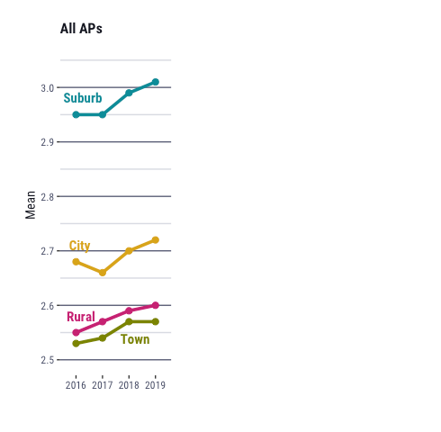
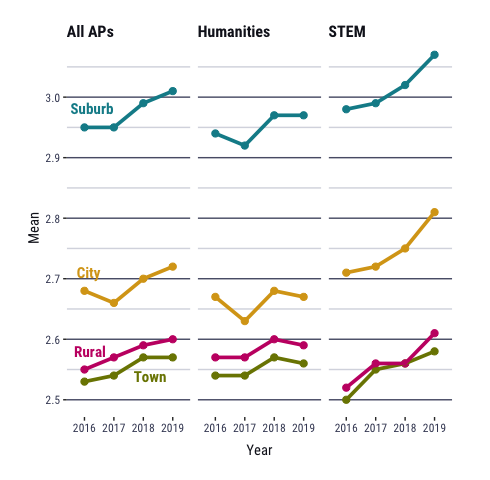
1 2 3 4 5
STEM Success: Data
Mean Unadjusted AP® STEM Exam Scores by State
Town
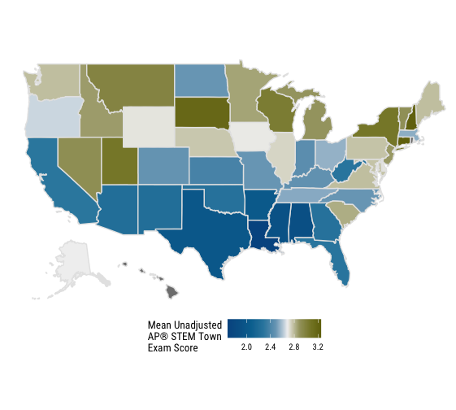
Rural
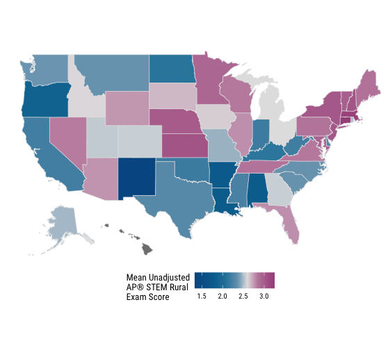
1 2 3 4 5
STEM Success: Data
Mean AP® Exam Scores by Domain, Rural Disaggregated
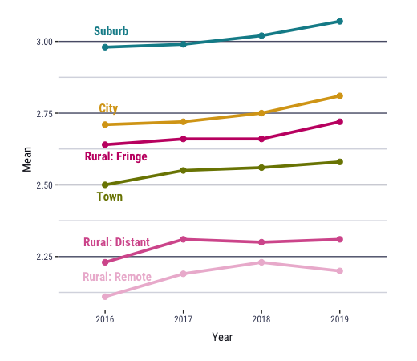
1 2 3 4 5
STEM Success: Analytic Approach
\[\hspace{-1.75cm}Y_{ij} = \beta_0 + \beta_1City_{i} + \beta_2Town_{i} + \beta_3RuralFringe_{i} + \beta_4RuralDistant_{i} + \beta_5RuralRemote_{i} + \\ \beta_6RaceEth_{i} + \beta_7Female_{i} + \beta_8SESDecile_{i} + \alpha_j + \varepsilon_{ij}\]
- \(Y_{ij}\)= Predicted AP® exam score for the i th student in the j th state-exam-year fixed effect
- \(City_{i},Town_{i},RuralFringe_{i},RuralDistant_{i},RuralRemote_{i}\)= NCES Locale indicator variables for school location
- \(SESDecile_{i}\)= Composite SES variable from SEDA, in deciles
- \(RaceEth_{i},Female_{i}\)= Binary indicator variables for student demographics
- \(\alpha_{j}\)= State by exam by year fixed effects
1 2 3 4 5
STEM Success: Findings
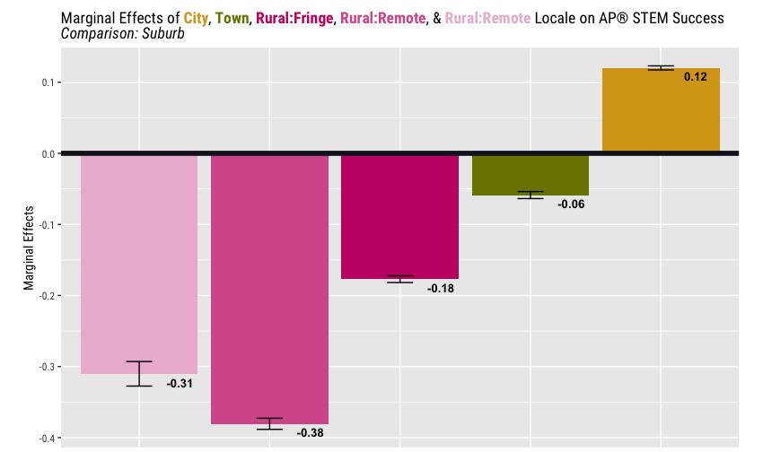
1 2 3 4 5
STEM Success: Findings
Top 10 Rural/Non-Rural Mean Gaps, Rural Disaggregated
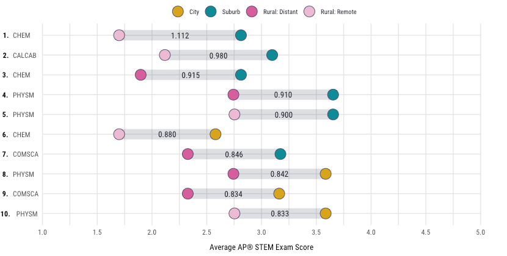
1 2 3 4 5
STEM Success: Findings
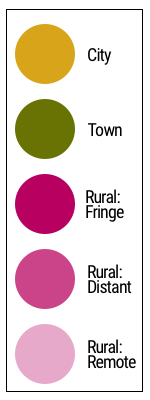
Ranked Locale Coefficients Across All AP® STEM Exams
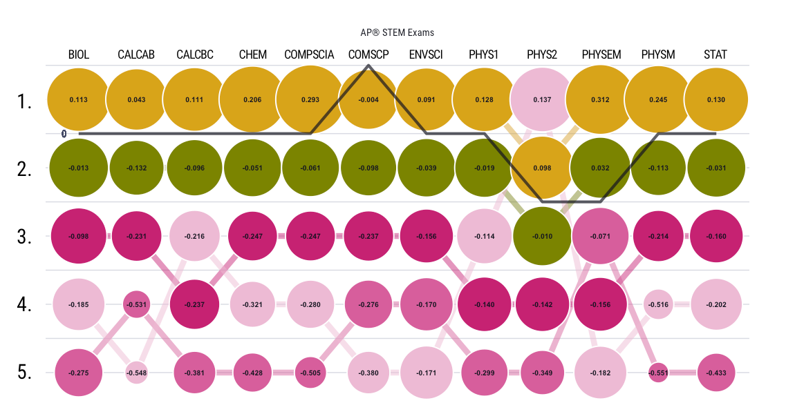
1 2 3 4 5
PREVIOUS WORK1: Implications
- Demonstrates that support is needed to advance rural equity in advanced secondary STEM success
- Highlights need to investigate middle school/early secondary STEM preparation in rural areas
- Provides evidence for increasing opportunities for rural STEM teacher professional learning
- Lays groundwork for inquiry into community learning ecosystem resources
- AP® Chemistry, AP® Calculus AB, AP® Computer Science A, AP® Physics C
CURRENT WORK: PART I
Spatial Inequities in PLTW® Availability
[Student Learning = Indicator Study]
STEM Access: Literature
- In a study of Iowa PLTW® programs, districts that offered PLTW® pathways had larger enrollments, were more affluent, and more urban.1
- Advanced math is less available in small high schools, schools serving historically marginalized groups, and rural high schools.2
1 2 3 4 5
STEM Access: Research Question
What is the geographic landscape of advanced STEM course availability in U.S. public schools?
1 2 3 4 5
STEM Access: Data
- AP® Course Audit Data for all U.S. Public Schools (2015-’19)
- PLTW® Schools and Programs for AY 2021-2022
1 2 3 4 5
STEM Access: Exploratory Analysis [Aspatial]
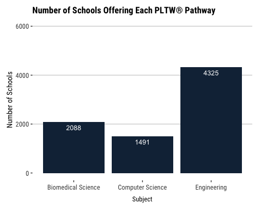
1 2 3 4 5
STEM Access: Exploratory Analysis [Aspatial]
Proportion of U.S. Public Schools Offering PLTW® Pathway by Locale
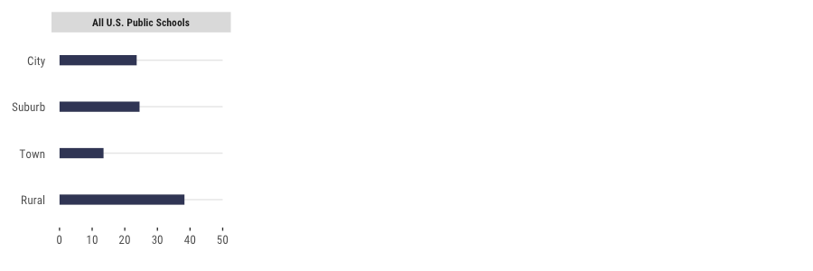
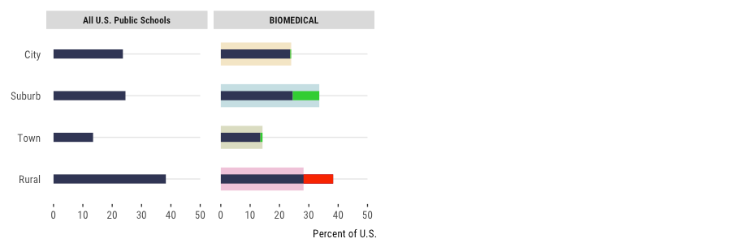
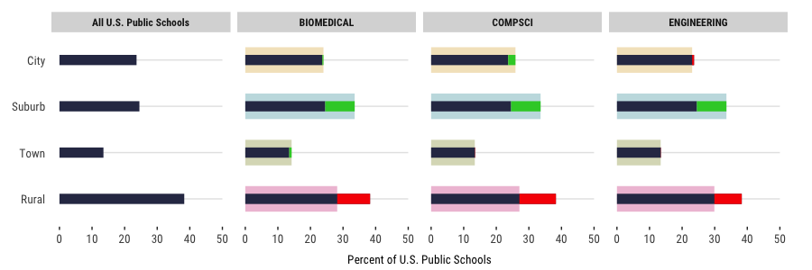
1 2 3 4 5
STEM Access: Analytic Strategy [Aspatial]
- One logit for each PLTW® Pathway \[\frac{P_i}{1-P_i} = exp(\beta_{0} + \beta_{1}City_{i} + \beta_{2}Rural_{i} + \beta_{3}Town_{i} + \beta_{4}log(SES)_{i} + \\ \beta_{5}\sqrt{Enrollment}\;_{i} + \beta_{6}log(Prop\;Black)_{i} + \beta_{7}log(Prop\;Latinx)_{i} + \beta_{8}log(Prop\;Asian)_{i} + \alpha_{i}+\epsilon_{i})\]
- \(P_{i}\)= Probability of offering pathway at school i
- \(City_{i},Rural_{i},Town_{i}\)= Locale indicator variables
- \(SES_{i}\)= Composite SES variable ranging from 0 - 999
- \(Enrollment_{i}\)= Student school population
- \(Prop\;Black_{i},Prop\;Latinx_{i},Prop\;Asian_{i}\)= Proportion of enrollment Black, Latinx, Asian
- \(\alpha_{i}\)= state fixed-effects
1 2 3 4 5
STEM Access: Results [Aspatial]
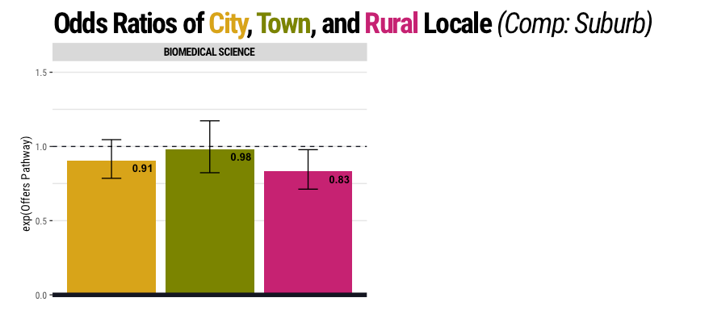
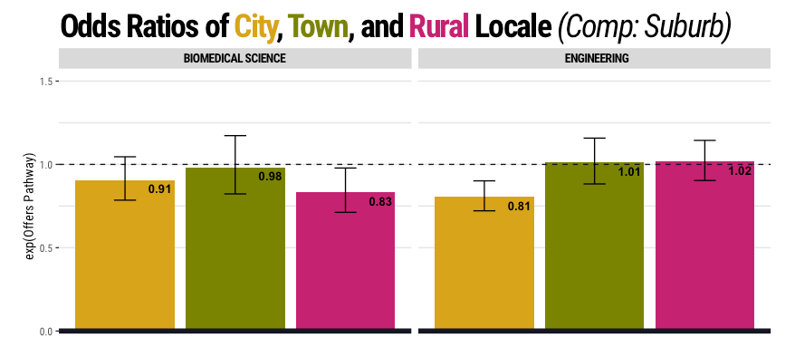
- Relative to suburban schools, the odds of offering the Biomedical Science pathway:
- 9% lower incity schools
- 2% lower intown schools
- 17% lower inrural schools
- Relative to suburban schools, the odds of offering the Engineering pathway:
- 19% lower incity schools
- 1% higher intown schools
- 2% higher inrural schools
1 2 3 4 5
STEM Access: Results [Aspatial]

Biomedical Science - Relative to Suburban school, Rural (17% lower) and City (9% lower) schools have lowest odds for offering the pathway
Computer Science - Rural (11% lower),Town (8% lower), and City (12% lower) all have lower odds than suburban schools of offering pathway
Engineering - City schools have lowest odds (19% lower) of offering the pathway compared to suburban schools
1 2 3 4 5
STEM Access: Exploratory Analysis [Spatial]
Raw Data
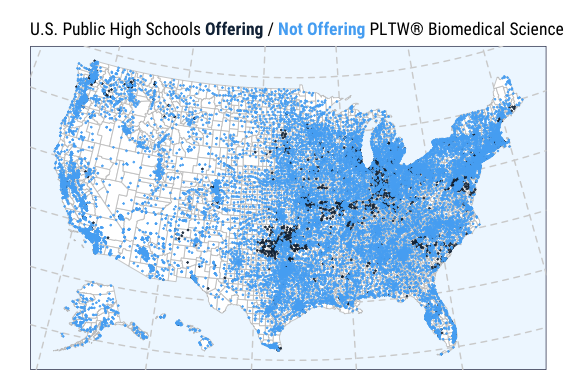PLTW® Biomedical Science
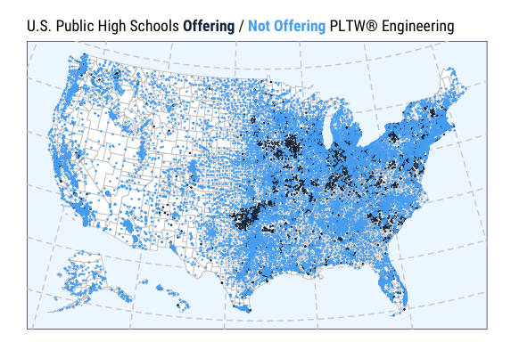PLTW® Engineering
1 2 3 4 5
STEM Access: Exploratory Analysis [Spatial]
Residuals from Logit Models
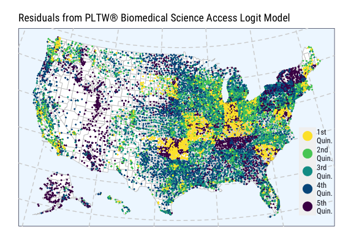PLTW® Biomedical Science
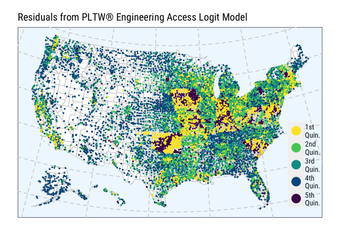PLTW® Engineering
1 2 3 4 5
STEM Access: Exploratory Analysis [Spatial]
Spatial Autocorrelation : Is the (in)availability of a specific AP® STEM course correlated with its nearby course (in)availability?
\[Moran's\;I = \frac{N}{\sum_i \sum_j w_{ij}} \frac{\sum_i \sum_j w_{ij}(X_i - \bar{X})(X_j - \bar{X})}{\sum_i (X_i - \bar{X})^2}\]
PLTW® Biomedical Science
\[I = .292 , p < .001\]
PLTW® Engineering
\[I = .289 , p < .001\]
1 2 3 4 5
STEM Access: GWR — Results [Spatial]
City Locale Coefficients — Odds Ratios
- Orange =city schools have lower odds than suburban schools of offering pathway
- Purple = city schools have higher odds than suburban schools of offering pathway
PLTW® Biomedical Science
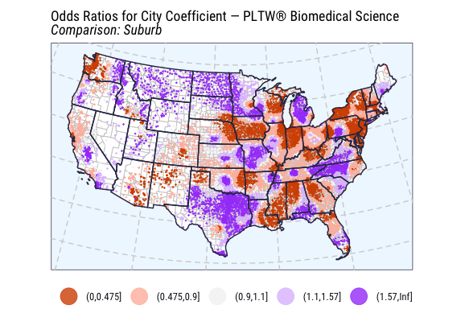
PLTW® Engineering
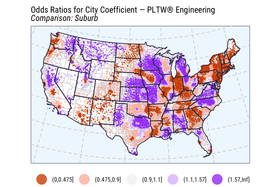
1 2 3 4 5
STEM Access: GWR — Results [Spatial]
Locale Coefficients — Odds Ratios
- Orange =[locale] schools have lower odds than suburban schools of offering pathway
- Purple = [locale] schools have higher odds than suburban schools of offering pathway
PLTW® Biomedical Science
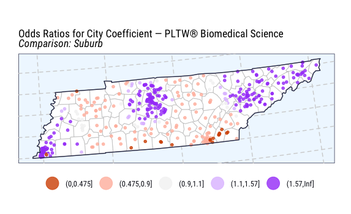
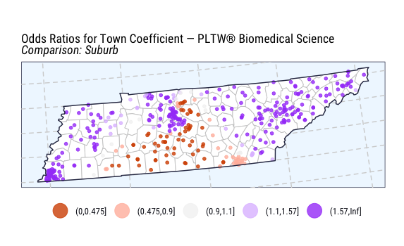
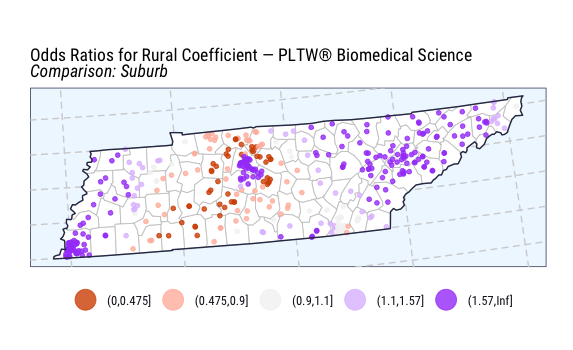
PLTW® Engineering
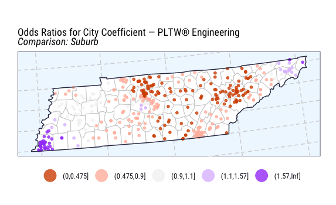
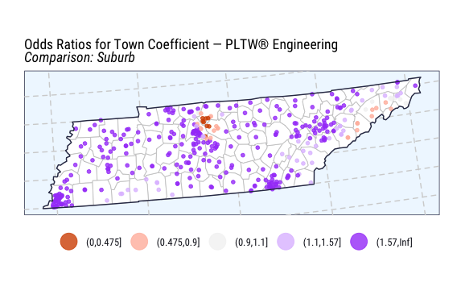
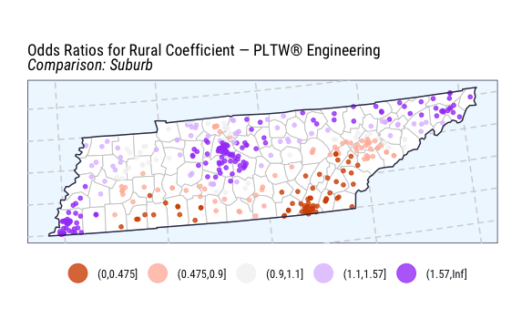
1 2 3 4 5
CURRENT WORK: Implications
- Shows necessity in taking a regional/local lens in expanding access to advanced STEM
- Need for inquiry into regional and state programs supporting STEM coursework
- Stakeholders should work to expand access to:
- PLTW® Biomedical Science in the greater Nashville area for non-suburban schools
- PLTW® Engineering in the greater Nashville, Knoxville, Chattanooga, and plateau area for city schools
- PLTW® Engineering in the greater Chattanooga, Knoxville, and southern TN areas for rural schools
CURRENT WORK: PART II
Local STEM Teacher Learning Ecologies
[Teacher Learning = Keystone Study]
Teacher Learning: Context
- Teachers learn from four spheres — interpersonal, institutional, community, and policy1
- Within these spheres, teachers learn with learning partners and distributed resources2
- These partners and tools comprise teachers’ learning ecologies:
the accessed set of contexts, comprised of configurations of activities, material resources and relationships, found in co-located physical or virtual spaces that provide opportunities for learning (Barron, 2004, p.6)3
1 2 3 4 5
Teacher Learning: Research Questions
What expertise resources characterize advanced STEM teachers’ professional content-based learning ecologies?
How and to what extent do their ecologies vary based on community locale and context?
1 2 3 4 5
Teacher Learning: Data
1 2 3 4 5
- Professional Learning Resources Survey Instrument
- N = 68 AP® & PLTW® teachers
- Embedded JavaScript mapping tool to geolocate resources
| AP® Bio | AP® Calc AB/BC | AP® Chem | AP® CompSciA | AP® CompSciPr | AP® EnvSci | AP® Physics C | AP® Physics 1&2 | AP® Stat | |
|---|---|---|---|---|---|---|---|---|---|
| City | 3 | 2 | 1 | 2 | 0 | 3 | 3 | 2 | 2 |
| Suburb | 0 | 2 | 3 | 0 | 1 | 1 | 0 | 1 | 1 |
| Town | 2 | 1 | 6 | 1 | 2 | 0 | 3 | 1 | 3 |
| Rural | 0 | 2 | 1 | 0 | 2 | 0 | 1 | 0 | 1 |
| PLTW® Engineering | PLTW® Biomedical Science | PLTW® Computer Science | |
|---|---|---|---|
| City | 2 | 0 | 2 |
| Suburb | 2 | 2 | 0 |
| Town | 2 | 1 | 0 |
| Rural | 0 | 2 | 0 |
- Teacher Interviews
Teacher Learning: Analytic Approach
Mixed Methods Geospatial Approach1
- Professional Learning Survey
- Spatial distance/ proximity analysis2
- Accessibility surface/ isochrones3
- Spatial composite index4
- Teacher Interviews
- Thematic analysis
1 2 3 4 5
Teacher Learning: Results
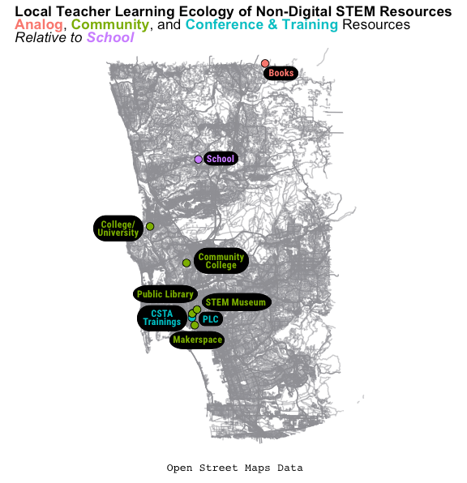
AP® Computer Science A City-Located
- 17.5 miles fromschool to analog resources
- 38 minutes by car
- 18.9 miles fromschool to community resources
- 31 minutes by car
- 21.1 miles fromschool to conference/training resources
- 33 minutes by car
1 2 3 4 5
Teacher Learning: Results
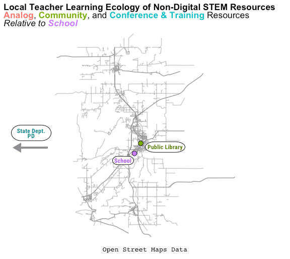
PLTW® Biomedical Science Town-Located
- 1.6 miles fromschool to community resources
- 5 minutes by car
- 0 miles fromschool to conference/training at same school
- 194 miles fromschool to conference/training at state department
- 3 hours and 5 minutes by car
1 2 3 4 5
CURRENT WORK: Implications
These initial findings speak to the need for stakeholders to engage with rural/town teacher learners differently:
- Universities should offer outreach programs and professional development opportunities in rural/town areas or nearby areas
- State departments should provide multiple regional professional development opportunities
- Industry should partner with rural/town teachers to provide resources and training in advanced STEM
FUTURE WORK
Research Agenda
Learning Ecosystems
- What resources characterize regional STEM learning ecosystems?
- How does resource availability and quality vary across communities?
- To what extent does the regional presence of resources, institutions, and industry predict local STEM learning outcomes?
- How does human mobility and community resource exposure shape local STEM learning outcomes?
- How does human mobility and resource exposure vary across geographies?
- How do student learners engage with their local STEM learning ecosystems?
- Teacher learners?
Spatial Equity
- Which high-leverage resources are most inequitably distributed across space?
- How might we amplify the reach of these resources to additional geographic areas?
- Which regions have strong STEM learning ecosystems? weaker ecosystems?
- How might we leverage configurations of and learnings from strong ecosystems to strengthen weak ecosystems?
- Who are the key knowledge brokers within regional spatial social networks for STEM learning?
- How does boundary-crossing by knowledge brokers into neighboring regional networks impact STEM ecosystem health?
Data Science as Tool
- Which ideas, skills, and practices are most important for students to learn in data science?
- How might we support teachers in facilitating this learning?
- What data science literacies (including ethics) are critical for students to learn in an age of AI and data science democratization?
- How might data science ideas, skills, and practices be distributed vertically (across grade levels) and horizontally (across disciplines) in K-12 education?
- How might we support administrators, teachers, and other stakeholders to leverage data science in improving student outcomes? community outcomes?
1 2 3 4 5
Research Agenda
Learning Ecosystems
- What resources characterize regional STEM learning ecosystems?
- How does resource availability and quality vary across communities?
- To what extent does the regional presence of resources, institutions, and industry predict local STEM learning outcomes?
- How does human mobility and community resource exposure shape local STEM learning outcomes?
- How does human mobility and resource exposure vary across geographies?
- How do student learners engage with their local STEM learning ecosystems?
- Teacher learners?
Spatial Equity
- Which high-leverage resources are most inequitably distributed across space?
- How might we amplify the reach of these resources to additional geographic areas?
- Which regions have strong STEM learning ecosystems? weaker ecosystems?
- How might we leverage configurations of and learnings from strong ecosystems to strengthen weak ecosystems?
- Who are the key knowledge brokers within regional spatial social networks for STEM learning?
- How does network-crossing by knowledge brokers into neighboring regional networks impact STEM ecosystem health?
Data Science as Tool
- Which ideas, skills, and practices are most important for students to learn in data science?
- How might we support teachers in facilitating this learning?
- What data science literacies (including ethics) are critical for students to learn in an age of AI and data science democratization?
- How might data science ideas, skills, and practices be distributed vertically (across grade levels) and horizontally (across disciplines) in K-12 education?
- How might we support administrators, teachers, and other stakeholders to leverage data science in improving student outcomes? community outcomes?
1 2 3 4 5
Research Proposal
Regional Ecosystems to Support K-12 CS Education
Research Questions:
- What resources and learning partners characterize a regional K-12 CS education learning ecosystem?
- Which institutions and individuals are the key hubs and bridges in the network?
- How do students and teachers engage with the ecosystem?
Methods:
- Participatory asset mapping1, Spatial social network analysis 2, GIS story maps 3
1 2 3 4 5
Long-Term Research Goals
- To make visible spatial inequities in STEM learning opportunities
- To support high-quality STEM experiences for all learners, particularly in regions of inopportunity
- To move toward the realization of spatial justice — spatial equity in the distribution of resources and opportunities — for all learners
1 2 3 4 5
THANK YOU